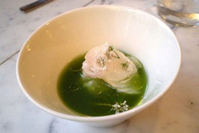
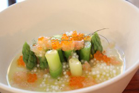
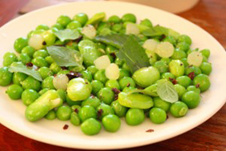
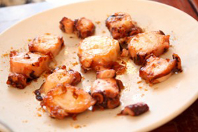

Quelle belle surprise quand on découvre un lieu où on se fait plaisir sans se mordre les doigts en ayant peur d’une note trop salée.
J'ai eu la joie de découvrir de délicieux mets, une cuisine à la fois simple et raffinée.
Le décor est un cube de marbre et de miroirs, imaginé par l’architecte Rem Koolhaas, on y retrouve cette touche de raffinement et de simplicité, pas de fioritures, on se concentre sur la beauté des plats et la convivialité qui y règne.
Prenez une réservation (il faut absolument réserver car ce lieu est très prisé) pour manger au bar! Vous serez sûrs de partager vos avis avec vos voisins et leur piquer des idées pour choisir vos plats.
Le concept du restaurant tenu par le chef basque Inaki Aizpitarte est de servir des plats comme les tapas « même si on n’aime pas trop ce mot » nous confie la barmaid.
On choisit à la carte entre autres du
Et on partage tous ensemble! Ce sont des assiettes avec des petites portions de dégustation (le concept des tapas) mais les prix permettent de les multiplier pour goûter un peu à tout.
   On trouve alors dans l’assiette la subtilité et la maitrise digne de la haute gastronomie, d’où la distance avec les tapas qui ont une réputation plus basique et ordinaire.
Et pour le choix de vin, un Sancerre, qui ne ressemble à aucun autre, totalement déconcertant, très fruité avec une belle note de pomme.
En tant que gourmande je me choisis bien sûr un dessert, ce qui me déçoit souvent dans de bons restaurants car ils ne sont pas toujours à la hauteur de la qualité des plats. Et là encore je suis surprise par les associations, le goût et toujours cette simplicité.
J’ai choisi la
Voilà tout ce que je cherchais, passer un bon moment convivial et joyeux et étonner mes papilles dans un lieu où la pureté des lignes se retrouve dans l’assiette.
PS: maintenant je ne pense qu’à découvrir le restaurant voisin tenu par le même chef « Le Chateaubriand » qui fonctionne avec un menu et des plats sûrement aussi fabuleux…